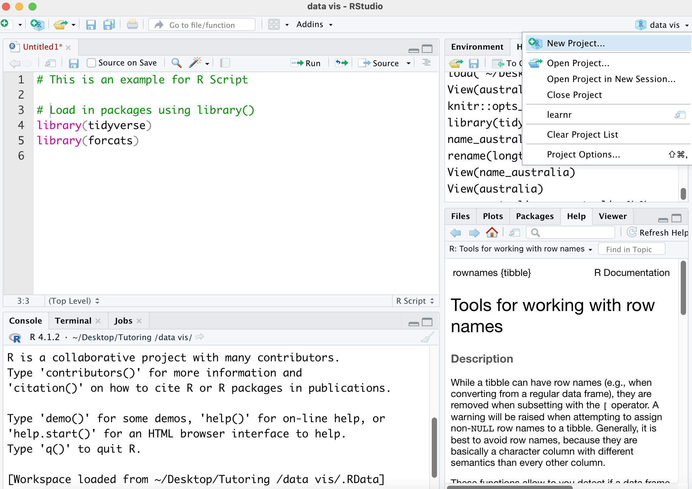
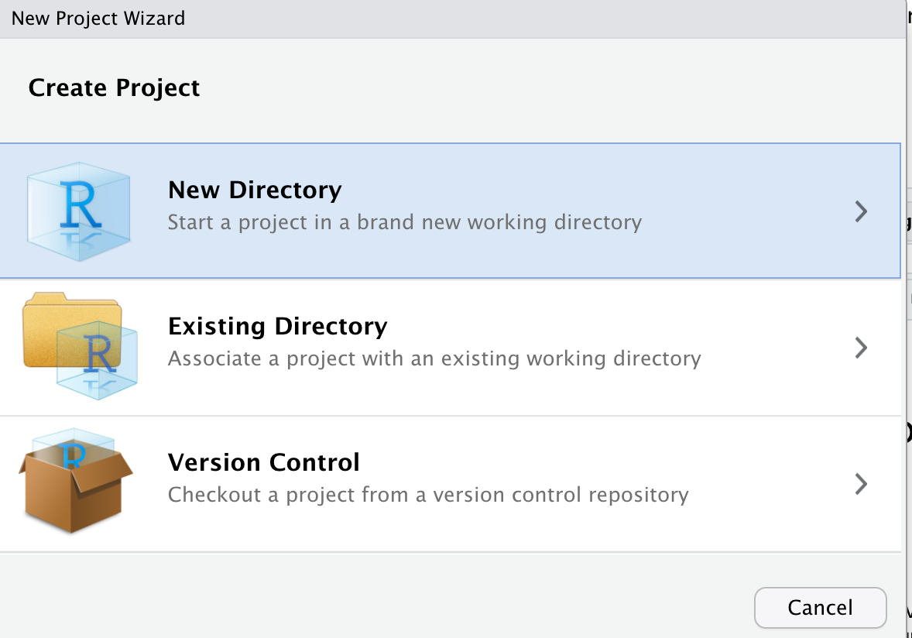
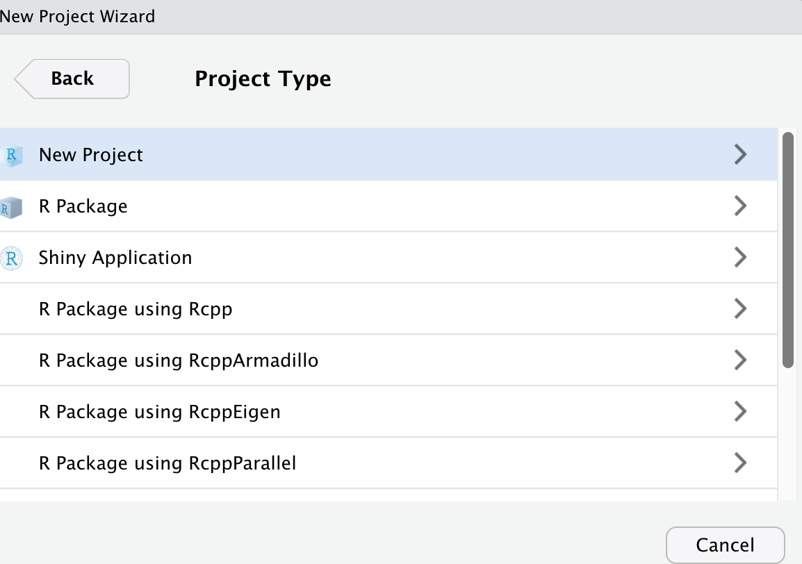
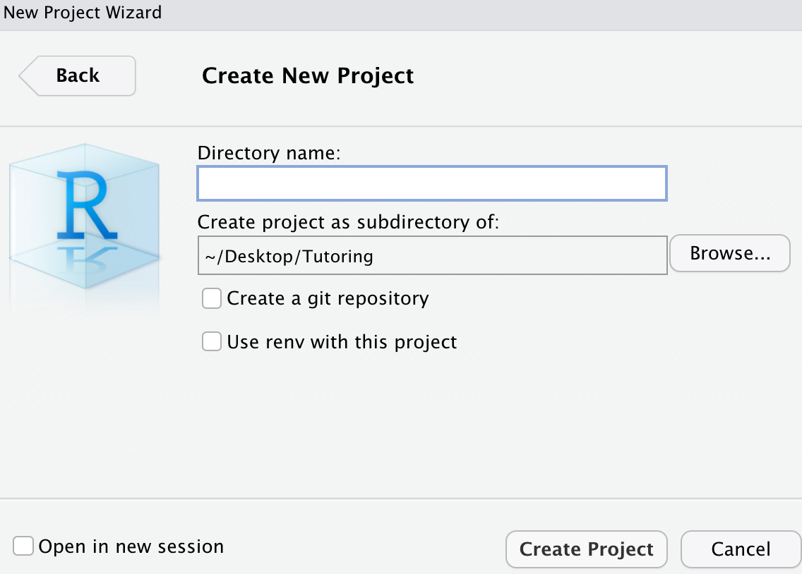
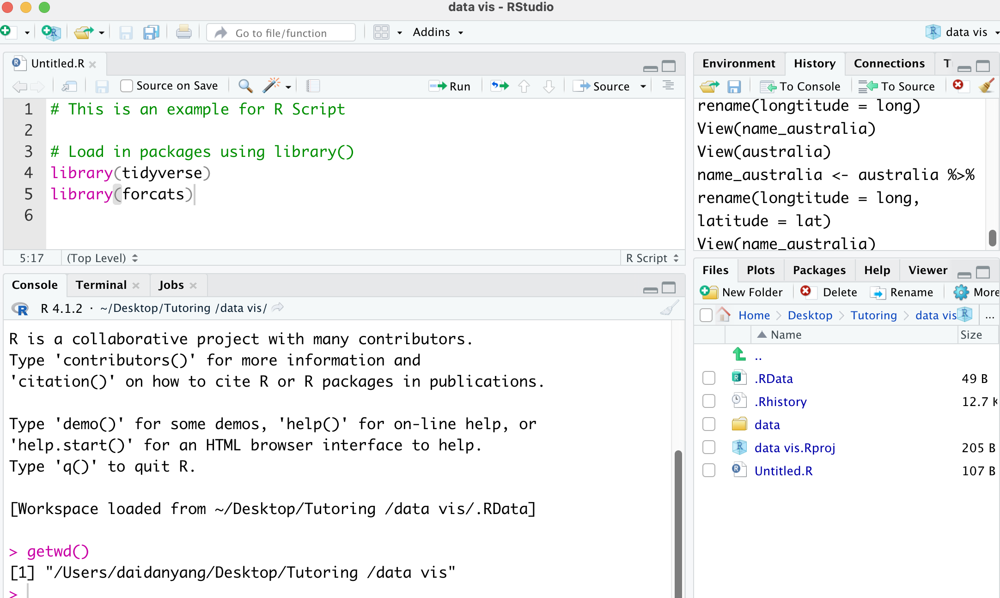
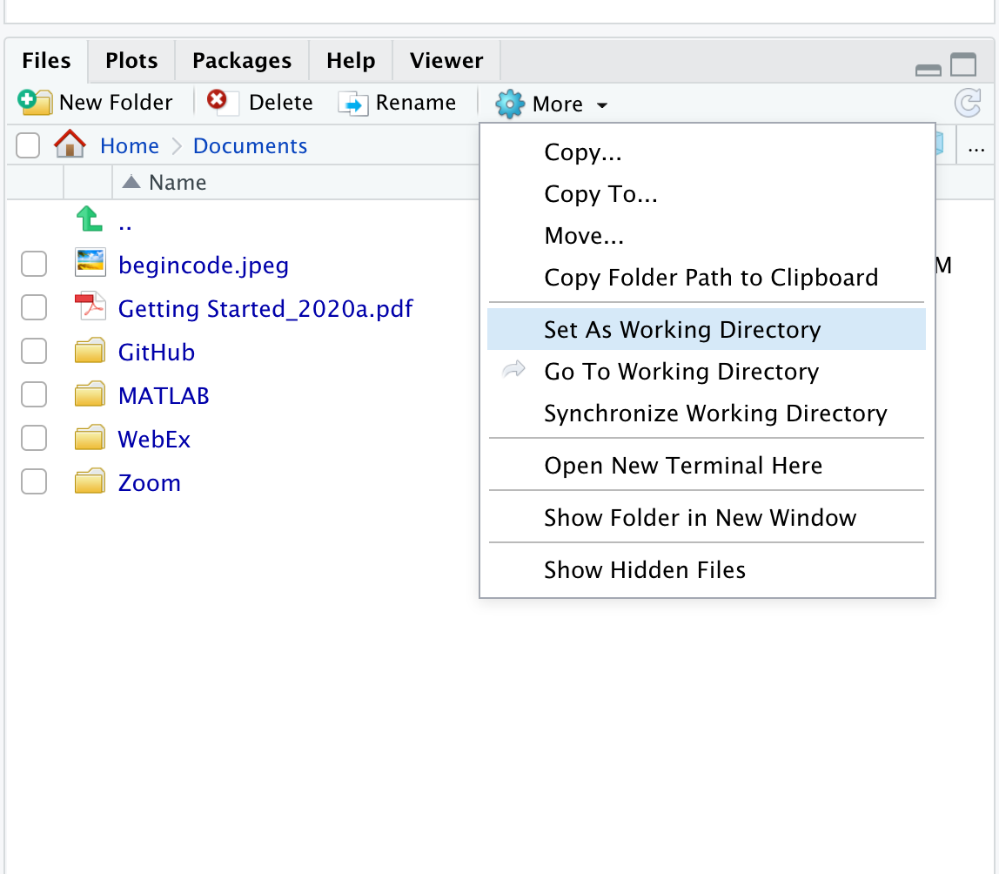
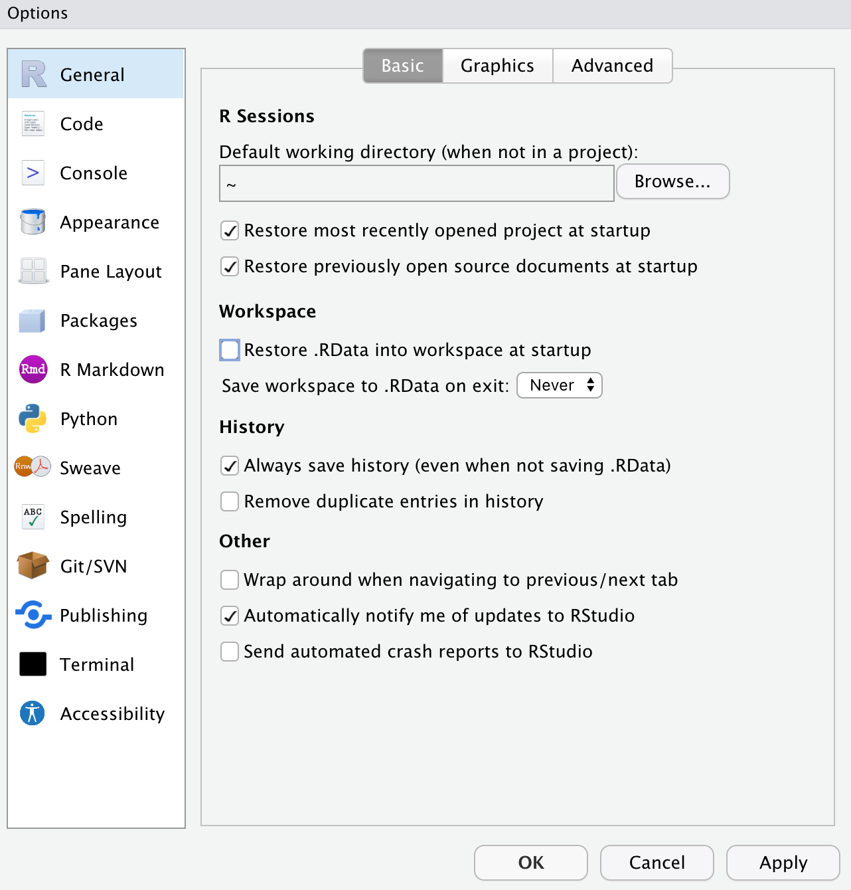

It is good project management practice which help you get all your data, scripts and RMarkdown file organised.
When you are learning with multiple subjects that all requires working in R but with totally different datasets and knowledge. Having an R project for each of the subject will help you manage your datasets,analyses and learning materials.
This is similar process when you are organising your word documents, PDFs, excel files and ect.
Having individual R project for different things you are working on keep your workflow and files organised.
On the right top corner, click on the blue project icon, you will see the pop-up window below.

Click on New Project... you will see the window below. If you want to start a new R project in a new location on your computer, select New Directory. If you want to start a new R project in a location where you have other R projects, select Existing Directory. For you very first R project, please select New Directory.

There are a few different R project including New project, R Package and Shiny Application. If you want to start writing an R package, you can choose R Package. If you want to start a shiny app, you can choose Shiny Application. For genernal R project, click New Project.

You can name the under Directory name and choose the project location under Create project as subdirectory of:. You can also Browse... for locations on your computer.

After getting your R project, you current working directory is where the R project located on your computer.
When you open up your R project, on the Console window, it shows your current working directory.
To double check your current working directory use function getwd(). After running this function in Console, you should have your current working directory printed out.

If you are not working in a R project, you can still set up an working directory for your analyses.
Go to the right bottom window, click on More. You can click on Set As working Directory. This will set the current location you are in showing on the Files window as the current working directory.

setwd() to set your working directory. Noted that the path you are putting in setwd() need to be double quoted "". For example, setwd("~/Desktop/Tutoring /data vis").Relative path means that the file path you use is relative to your current working directory.
Absolute path means that the file path is the path on your personal computer which you should never use. Using absolute path would create problem when you trying to communicate your project to others. They might not have the same absolute path you used in this project.
Make sure that all your data and scripts are all packed in one R project and use the relative path to direct where are the files located.
For example, an relative path to the data vis project would be \data\cars.csv
Every time you run some R code and read in datasets, they will be automatically stored in the Environment which is the top right window.
When you quite RStudio session, the data you read in, the functions you created will be stored in this Environment. So later on, you can come back and continue from where you left.
However, this could create problems. It is hard to communicate your code and analyses to others as they might not have the same variables or data stored in their environment.
The better project management way is to disable this function. This way you will keep all your analysis steps in one script and it is reproducible by others.
To disable this function in RStudio, go to Tools Global Options General
Unselected Rstore .RData into workspace at startup and change Save workspace to .RData on exit to Never
